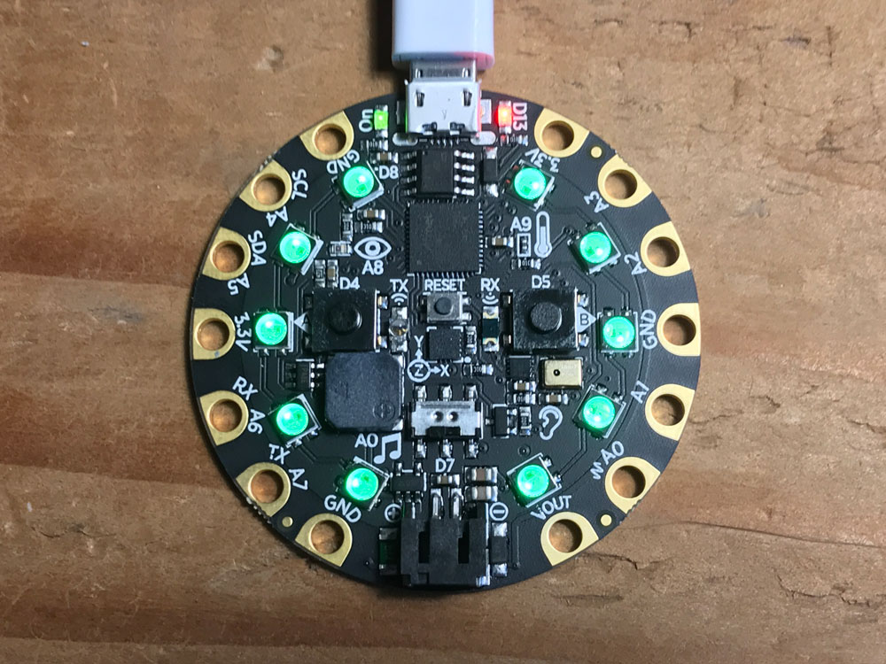
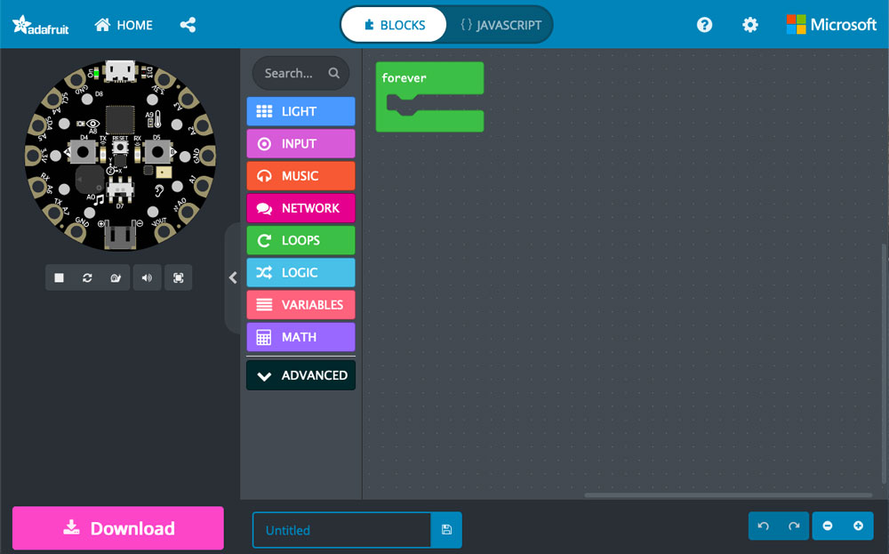
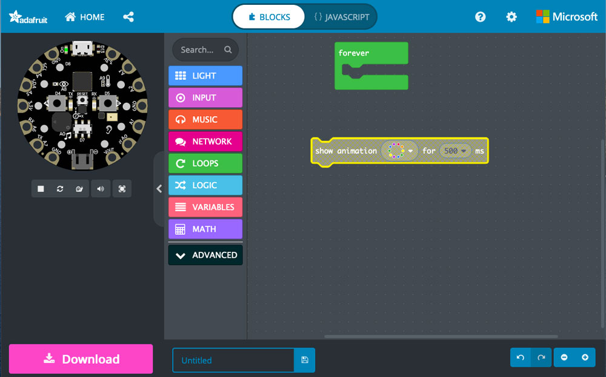
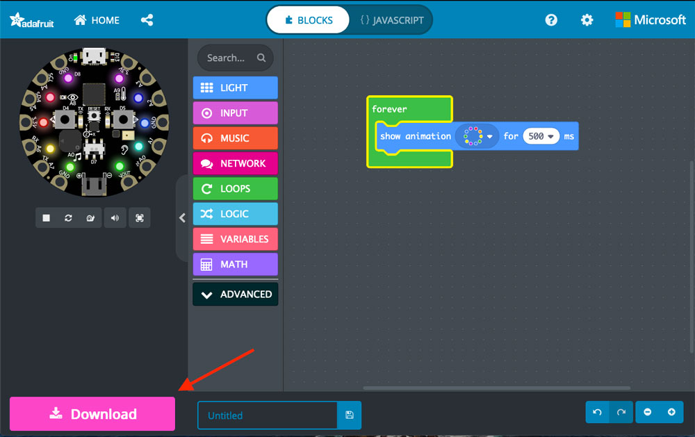
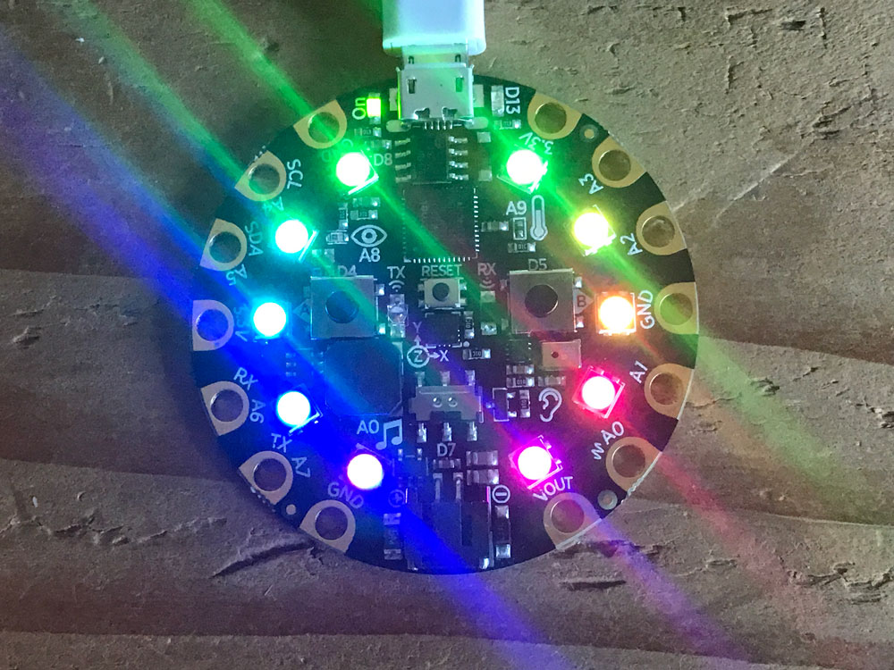

Chapter 1 Setup
The first step of any sensor journalism project is setting up your environment.
It is, unfortunately, a moving target. Fortunately, Adafruit keeps updated instructions available.
Windows Users: You will need to first install drivers.
All Users: You may to update the bootloader, especially if you are on a Mac.
1.1 First things first
Let’s have some fun.
Plug in your Circuit Playground to a USB port on your computer. You should see two things happen: first, your LEDs should all turn green like this: 
And you should now have a USB drive on your computer called CPLAYBOOT.
If that’s the case, you’re good to go. If not, review the Adafruit setup instructions.
Let’s go to the MakeCode site specifically for the Circuit Playground Express.
Click on the big blue New Project box.
You should get a workspace, with concepts you can work with on the left, and the execution space on the right, with a U shaped box that ominously says “forever” on it.
In this workspace, you can drag commands into the space, arrange them, and execute them on your board. To demonstrate, let’s click on the Light box and drag out the “show animation for 500 ms” bar into the workspace. Then, drag it into the forever box so they snap together.
  
Then, click the Download button. The code to run on your board will download to your Downloads folder with a .uf2 extension on it. Drag that file into your CPLAYBOOT drive. When that happens, CPLAYBOOT is going to disappear (and on a Mac, you’ll get that dreaded Disk Not Ejected Properly warning that you can, in this case, completely ignore).
What’s your Circuit Playground Express doing? Is it spinning a rainbow at you over and over?
Congratulations, you’re a hardware programmer.

1.2 Installing Circuit Python
Your Circuit Playground is capable of running both MakeCode and Circuit Python. To install Circuit Python, you’ll need to follow a few steps:
- Install the latest version of Circuit Python on your board.
- Install mu-editor, a simple and free code editor for Circuit Python.
Once you’ve got that going, time to look at some Python basics.